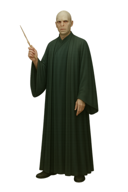

Lord Voldemort
Back to Hogwarts “You know of course, that they have called this boy my downfall? You all know that on the night I lost my powers and my body, I tried to kill him. His mother died in the attempt to save him—and unwittingly provided him with a protection I admit I had not foreseen. … I could not touch the boy. His mother left upon him the traces of her sacrifice. … This is old magic. I should have remembered it, I was foolish to overlook it. … But no matter. I can touch him now.”
“Harry Potter, the boy who lived … come to die.
We bow to each other, Harry. Come, the niceties must be observed. … Dumbledore would like you to show manners … bow to death, Harry …”
Personality of lord Voldemort
Introduction
Lord Voldemort is known for being one of the worst and most dangerous wizards who ever lived. Everything about him is focused on doing harm, gaining power, and spreading fear. He has no good qualities that people admire. His entire personality revolves around being cruel, selfish, and completely obsessed with control. Voldemort’s badness isn’t just in his actions—it defines who he is at the deepest level.
He Chooses Evil Every Time
Voldemort always chooses evil, no matter the situation. He could have chosen a different path many times in his life, but he never wanted to. From a young age, he enjoyed hurting people and using his powers in the worst possible ways. He never tried to be kind or fair, because that didn’t interest him. Doing evil made him feel strong and important, and that was all he cared about. For Voldemort, being evil wasn’t just a habit—it was his purpose.
Power Matters Most to Him
Voldemort’s greatest desire is power. He doesn’t want power so he can help people or make the world better. He only wants it so he can control everyone and everything. He believes that having power makes him better than other people. That’s why he went further than any other dark wizard, creating Horcruxes and using dark magic without a second thought. He wants power so badly that he will do anything, no matter how cruel or unnatural, to keep it forever.
He Cannot Feel Love
One of the worst parts of Voldemort’s personality is that he cannot feel love. He doesn’t understand it, and he doesn’t want to. To him, love is a weakness that gets in the way of power. He sees people who care about each other as fools. Voldemort has no loyalty or affection for anyone, not even his followers or his snake. He uses people when they are useful and casts them aside when they aren’t. Love is something he has rejected completely, and that makes him empty inside.
He Uses Fear as a Weapon
Voldemort enjoys making people afraid. Fear is one of his main tools, and he uses it to control others. Everything about him—from his cold voice to his snake-like appearance—is meant to frighten. People follow him not because they respect him, but because they are too afraid to stand up to him. Voldemort thinks that if people fear him enough, he will always get what he wants. He would rather be feared than loved, because he believes fear lasts longer.
He Has No Real Friends
Voldemort doesn’t have friends, because he doesn’t believe in friendship. He thinks that caring about others makes you weak, so he avoids it completely. The people around him are not friends—they are servants or tools. He doesn’t trust anyone, and no one truly trusts him. Even those who claim to be loyal to him are only loyal because they’re scared of what he’ll do if they aren’t. Voldemort is alone by choice, because he values power over connection.
His Plans Are Always Harmful
Every plan Voldemort makes is designed to hurt others or take something that doesn’t belong to him. He never works toward peace, fairness, or happiness. His goals are always about gaining more power, creating more fear, and destroying anything or anyone that stands in his way. His plans don’t make the world better—they leave it darker and more broken. Voldemort’s ideas always lead to suffering, because that is what he causes best.
Conclusion
In the end, Voldemort’s personality is built on cruelty, selfishness, and the endless desire for power. He chooses evil, rejects love, and lives to spread fear. There is nothing good or noble in him. He is remembered not for greatness, but for how much harm he caused. Voldemort’s badness is what defines him, and it is also what leads to his downfall. His lack of understanding of love and goodness leaves him empty, no matter how powerful he becomes.
Back to Top